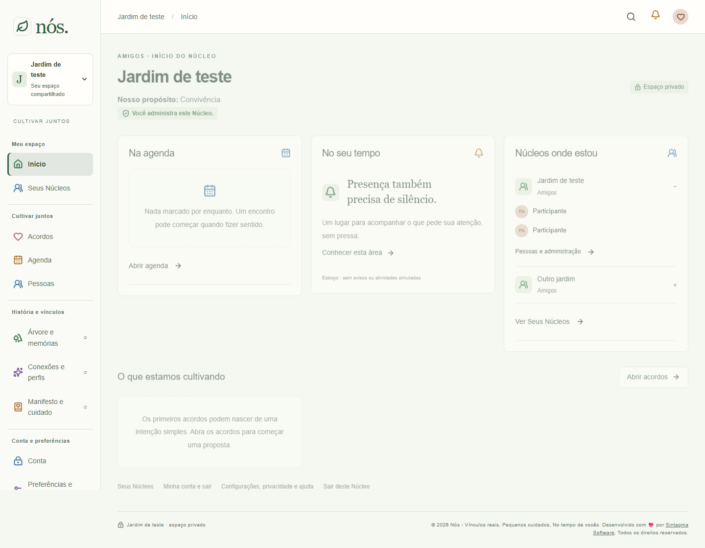
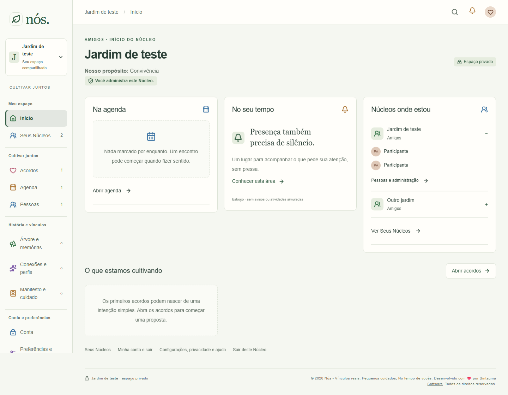
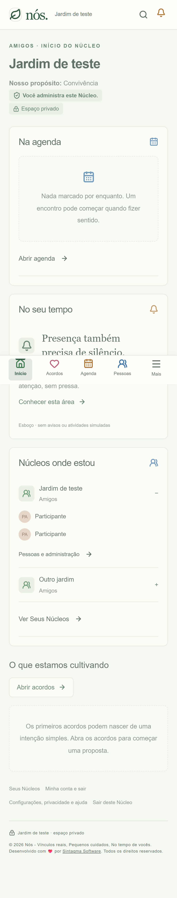
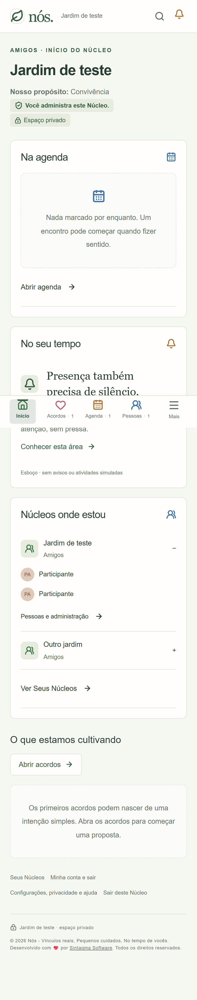
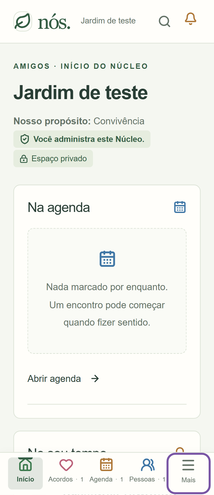
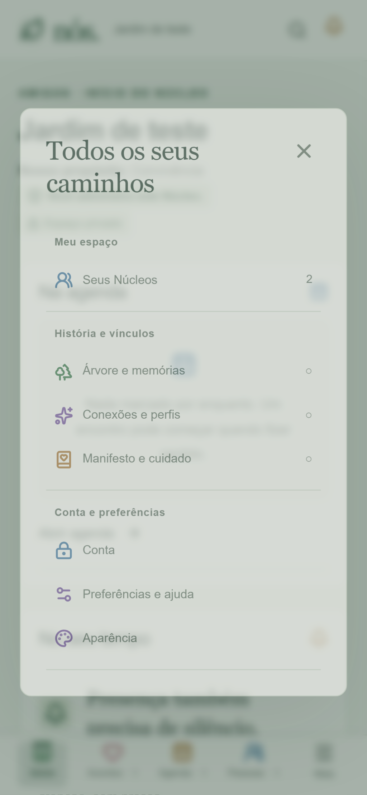
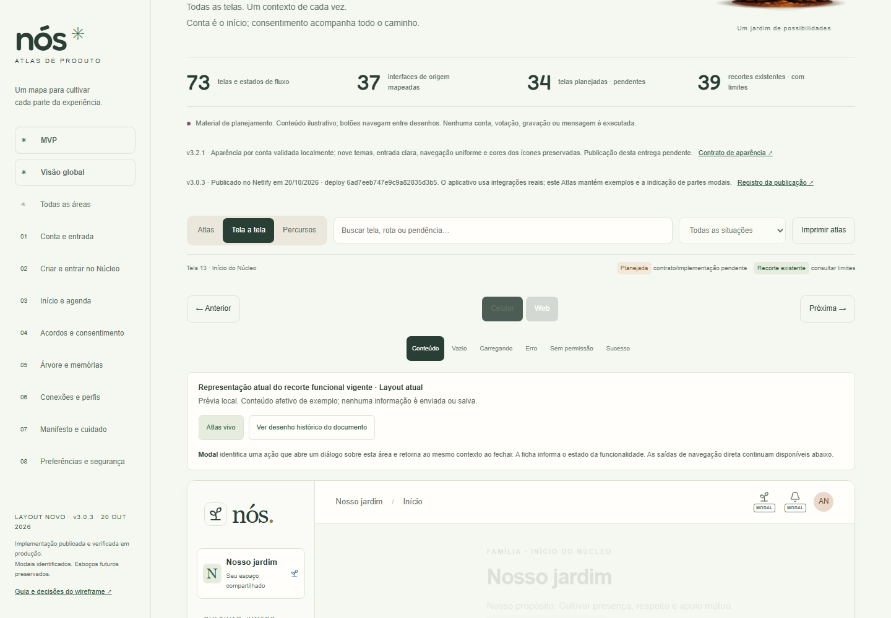
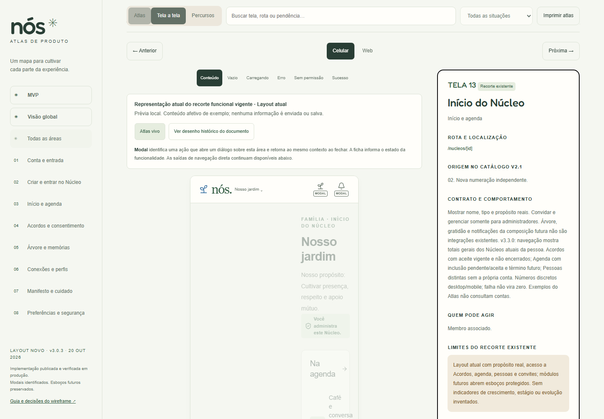

24/10/2026. Aplicativo com contas descartáveis locais; dados de exemplo no Atlas. Referência sem totais reconstruída por ocultação visual somente dos números na mesma tela, identificada abaixo. Não é captura de execução de uma versão anterior.
Contrato · Galeria histórica v3.2.1







